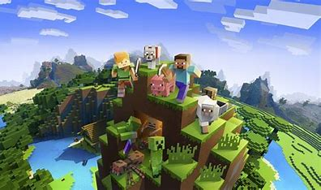
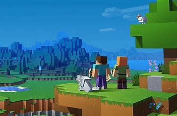
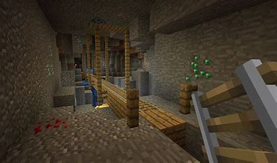
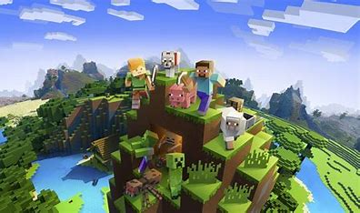
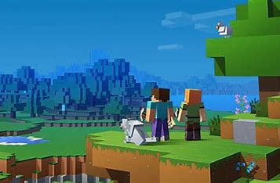
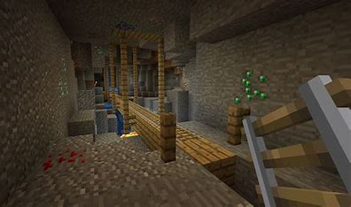

MINECRAFT
Minecraft è un videogioco sandbox di avventura creato dallo svedese Markus Persson (noto anche con lo pseudonimo Notch) nel 2009 e sviluppato da Mojang Studios nel 2011. Il gioco presenta un mondo composto da cubi formati da voxel generati proceduralmente, dove i giocatori possono estrarre risorse, costruire ed esplorare. Dopo il lancio come gioco per browser, è stato reso disponibile su molteplici piattaforme. Minecraft è diventato il primo videogioco più venduto della storia, con una vasta gamma di prodotti derivati e una comunità attiva globalmente.
 





Modalità di gioco
Quando un nuovo mondo viene creato, i giocatori hanno la possibilità di scegliere tra 4 modalità e 4 difficoltà, da "pacifica" a "difficile": maggiore è la difficoltà, maggiore sarà il danno che i giocatori subiranno dalle entità. Ci sono anche altri fattori che variano a seconda della difficoltà. Se si seleziona la modalità "pacifica", ad esempio, non si genereranno entità ostili, mentre selezionando la modalità "difficile" è possibile morire di fame.
Quali sono?
SOPRAVVIVENZA: i giocatori devono raccogliere risorse, costruire strutture, combattere mob, mangiare ed esplorare il mondo nel tentativo di sopravvivere. Nella modalità sopravvivenza il giocatore inizierà in un mondo e dovrà cercare di raggiungere l'End, dove può sconfiggere il boss principale del gioco, il Drago dell'End, tuttavia, dopo i titoli di coda presenti dopo la sconfitta di quest'ultimo, si potrà comunque continuare la propria avventura.
ESTREMA: chiamata nella lingua inglese "Hardcore", è simile alla modalità Sopravvivenza con le sole differenze che la difficoltà è bloccata a "difficile" e, una volta morti, non ci si può rigenerare (nota che è possibile utilizzare dei comandi per tornare in vita, ma essi sono disattivati in modalità estrema). È possibile cancellare il mondo o rimanerci in modalità Spettatore.
CREATIVA: i giocatori hanno accesso a tutte le risorse e gli oggetti direttamente nel proprio inventario, e possono rimuovere e piazzare blocchi istantaneamente. È possibile volare liberamente nel proprio mondo e i giocatori sono invincibili. Questa modalità è pensata per dare libero sfogo alla creatività di ogni persona, costruendo senza preoccuparsi di reperire i materiali e di dover sopravvivere.
AVVENTURA: è stata ideata appositamente per le mappe personalizzate create dagli utenti. È simile alla Sopravvivenza ma con alcune restrizioni applicate dal creatore della mappa. Solitamente, tali restrizioni sono correlate alla possibilità di rimuovere o piazzare blocchi. Questo porta il giocatore a ottenere gli oggetti richiesti e a godersi l'avventura nel modo in cui il creatore l'ha pensata. Inoltre, esiste un blocco pensato appositamente per questa modalità: il blocco comandi. Questo permette ai creatori di mappe personalizzate di migliorare l'interazione col giocatore tramite dei comandi dati direttamente dal server.
pagina iniziale